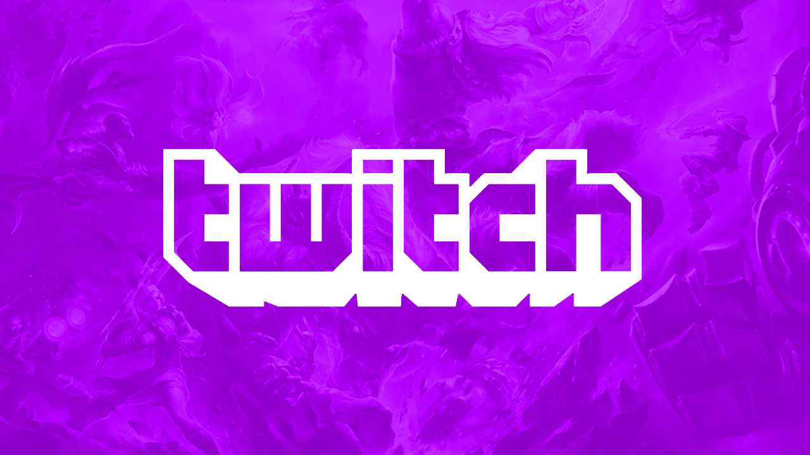
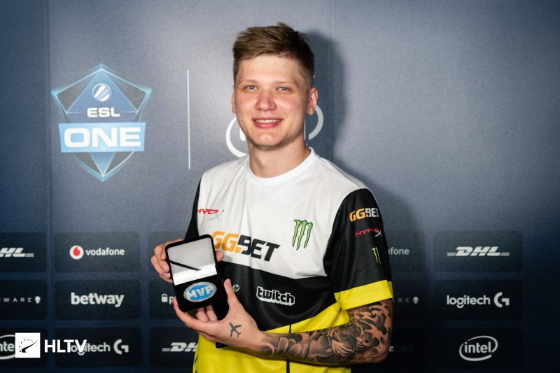
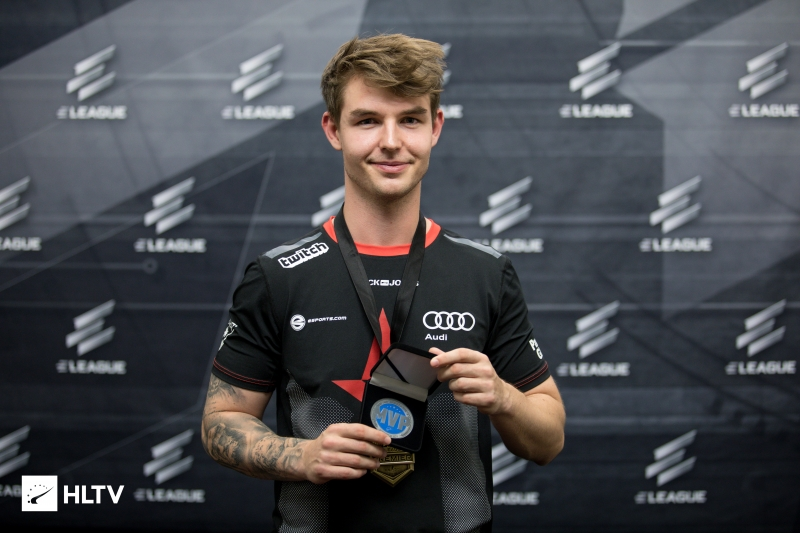

Twitch
Twitch est un service de streaming et de VOD de jeu vidéo, de sport électronique et d'émissions
apparentées lancé en juin 2011. Le site a été créé afin d'avoir un site consacré à la branche
jeux vidéo de Justin.tv, qui était la partie la plus populaire du service. Le nouveau site va
alors surpasser son parent, qui ferme en août 2014, pour que l'entreprise se concentre essentiellement sur Twitch.
D'après Emmett Shear, le cofondateur et dirigeant du site, celui-ci avait au début de 2012
près de 15 millions de visiteurs mensuels. Twitch compte aujourd'hui un peu plus de 1000
employés, avec des bureaux basés à San Francisco. Twitch est racheté le 25 août 2014 par
Amazon pour 970 millions de dollars, alors que la société négociait son rachat par YouTube plus tôt dans l'année.
Aller sur Twitch.tv
HLTV
Ce programme permet aux spectateurs qui assistent aux matchs et d'assister au déroulement des compétitions.
Les spectateurs sont souvent intéressés par les championnats du monde et HLTV leur permet notamment
d'assister à ces matchs comme s'ils y étaient. HLTV est capable de soutenir plusieurs milliers
d'utilisateurs. HLTV est généralement utilisé par toutes les ligues et événements en rapport
avec Counter-Strike. Cette technologie est librement accessible au public. Le but est de permettre aux
fans de supporter leur équipe en leur permettant de regarder les matchs ainsi que de critiquer
les différentes tactiques employées par les joueurs. HLTV permet également d'enregistrer des matchs.
L'équipe ou n'importe qui d'autre peut alors revoir le match pour évaluer l'efficacité des stratégies,
l'améliorer, ou simplement pour revoir les meilleurs moments.
Aller sur HLTV.org

Le #1 CS:GO en 2018

 Aleksandr "s1mple" Kostyliev
Aleksandr "s1mple" Kostyliev
s1mple, jouant pour l'équipe professionnelle russe Natus Vincere, a été le meilleur joueur de CS:GO en 2018 en fonction de son talent, son impact et ses statistiques incroyables. Encore aujourd'hui, il continue son carnage, espérant d'être encore le meilleur pour l'année 2019 avec son total de 9 médailles MVP au cour de sa carrière.
Voir le profil HLTVLe #2 CS:GO en 2018
